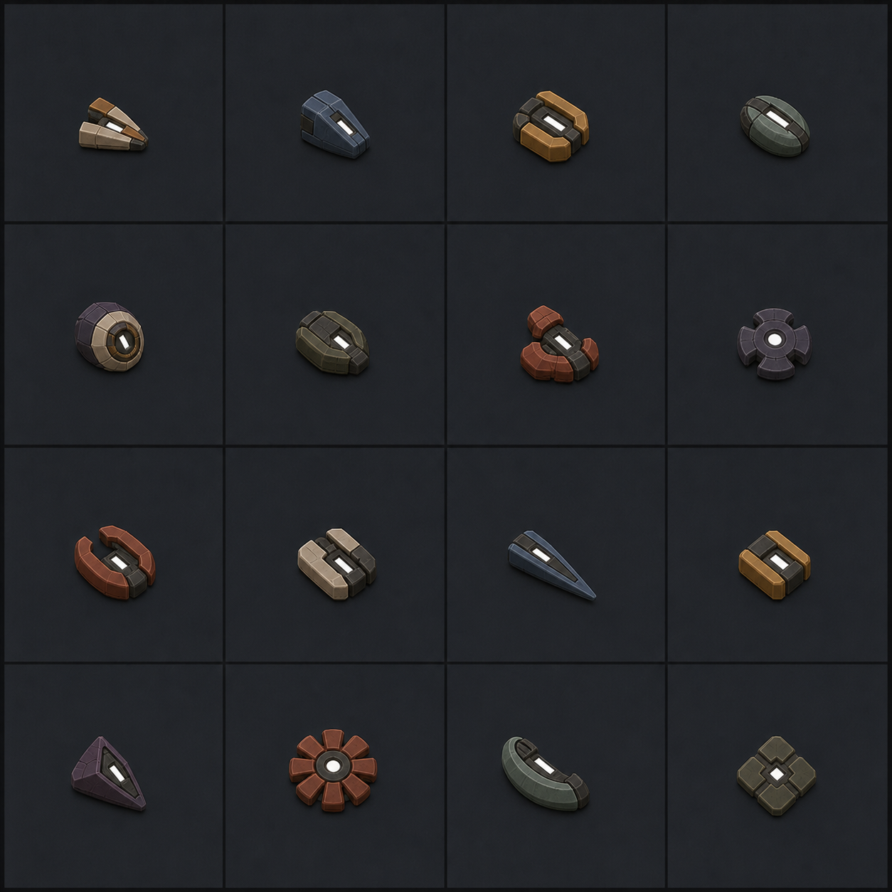

Tell → action → resolve
Animation follows replay-authored phases and facts. Seeking directly into a moment produces the same frame as continuous playback.
A complete visual and audio direction for signature skills, class attack heads, level-up, and the mechanics timing needed to make those commitments honest—not generic spectacle.
Spacey and ambient in texture, but causal and disciplined in motion. Every flourish has to explain a public game fact from overview scale.
Animation follows replay-authored phases and facts. Seeking directly into a moment produces the same frame as continuous playback.
Dark solids, narrow edge energy, low pressure forms, sparse particles. No glassy props, glossy toys, bloom blasts, or magic fog.
Rare signatures can be distinct without shouting. Repeated attacks stay compact and share one quiet release voice when fights stack.
Tapline presents one tick in roughly 400 ms. Nine signatures publish a
tell, but only Hook, Falling Star, and Rail currently give
an opponent a genuine response action before their immediate effect;
Sentinel Seed instead gives warning before a later-firing construct.
These resolve after a body has had a chance to answer the public commitment.
These have a tell or pre-payoff motion, but their first timing beat is not always an enemy decision window.
These become mechanically active on the cast tick.
This is the proposed Tapline vNext package. Reactive construction and traps stay instant; the four mismatches between visual promise and rules get new authoritative phases.
Keep its one-tick charge and frozen radius, but activate after the response movement phase instead of before it. A signature chosen by a body that stayed inside is still blocked; duration, radius, and cooldown stay unchanged.
Add a one-tick tracked acquisition that resolves after movement. Range or sight loss cancels it; no allied hit receives the bonus on the original cast tick.
Keep its one-tick tell, but resolve after movement from the frozen origin. The caster is rooted; bodies that leave escape, and bodies that enter accept the risk.
Add public ballistic flight at three tiles per tick, then begin the full ten-tick field on landing. It arcs over walls and does not invent projectile collision.
Each row reads left to right. Click any board for the source resolution. Notes below the board are binding production corrections.
Compact munitions, not miniature bots. Each becomes an east-facing SVG mask and a derived 3D extrusion—no Meshy projectile round and no GLB batch.

One continuous goal after approval, with proof against real Tapline replays before the work is considered done.
Implement the four versioned timing changes, fingerprint Tapline vNext, and prove response, cancel, cooldown, and replay boundaries.
Pool low rings, brackets, pressure slabs, ribbons, panes, particles, and resolve beats. No per-frame asset churn.
Replace generic rigs with the treatments above, bound to exact phases and facts with honest grammar-2 compatibility.
Add sixteen valid SVG look folders and map every Arc class away from the shared Arc Pulse.
Add the short brass transient around the persistent chevron, driven only by the level-up fact.
Generate six private sources only after timing stabilizes, derive restrained deliveries, and keep ordinary attacks shared.
Mechanics exhibits, overview, phone landscape, pause/seek, reduced motion, crowd performance, and whole-pack ear-safety audit.
Six source calls, reused by physical verb. Results remain short and quiet; a bad source is rejected rather than forced into the game.
No ambience, loops, high pings, electrical fizz, screeches, whip cracks, explosions, or long reverb. Exactly six private jobs are authorized by whole-batch approval; there are no automatic rerolls.
Approval means the production corrections—not every literal generated
pixel—are the target. The implementation stays on main, commits
coherent checkpoints, and does not stop at “assets exist”: Tapline playback,
seeking, reduced motion, performance, and the strict whole-pack audio audit are
part of done.